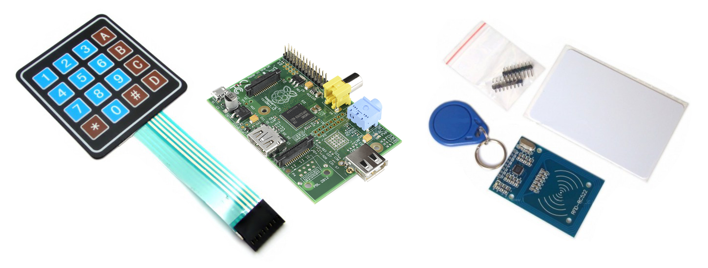

System autoryzacji pracowników i badanie czasu pracy
Mikołaj Jermakowicz 200690
Kamil Machnicki 200752
Przedstawienie projektu
- System autoryzacji pracowników dwoma metodami:
- Czytnik kart zbliżedniowych RFID
- Klawiatura do wpisywania kodu
- Baza danych zbierająca informacje o pracownikach
- Panel do wyświetlania informacji
Funkcjonalności
Podstawowe:
- Rozpoznanie pracownika na podstawie odczytu z karty
- Zapis godziny wejścia i wyjścia pracownika
- Przentacja danych zebranych w bazie danych
- Sygnalizacja przepuszczenia pracownika i błędnej karty
Opcjonalne:
- Hasło wpisywane z klawiatury numerycznej
- Analiza zebranych danych
- Obsługa niepoprawnego zachowania użytkownika
Oprogramowanie
Linux: Raspbian
Obsługa urządzeń peryferyjnych: C++
Baza Danych: PostgreSQL
Prezentacja Danych: Python + Qt
Sprzęt
- Czytnik RFID z anteną MF RC522 13,56MHz, SPI
- Klawiatura membranowa 4x4, GPIO
- Raspberry Pi

System autoryzacji pracowników i badanie czasu pracy
Mikołaj Jermakowicz 200690
Kamil Machnicki 200752